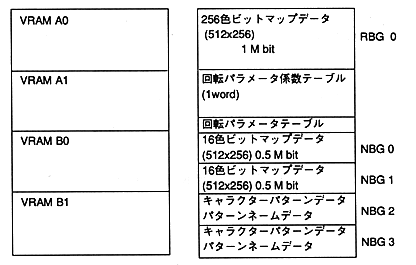

[Example 1] Using 5 displayable surfaces of VDP2
When all the data other than NBG2 and NBG3 are bitmaps, and 1 rotation surface is set to 256 colors and 4 normal surfaces are all set to 16 colors, it will be as follows. A rotation parameter table is required to move the rotating surface. In addition, a rotation parameter coefficient table must be prepared for X-axis and Y-axis rotation.
In this library, the rotation parameter coefficient table is usually arranged from the top of each bank (VRAM A0, VRAM A1, VRAM B0, VRAM B1). However, only 2kWord (4kByte) is used to rotate the X and Y axes of this library. Therefore, the rotation parameter table, line scroll table, line color table, back screen data, etc. can be placed in the remaining area (124kByte). (1M bit = 128kByte)

Figure 2 Using 5 displayable VDP2 screens